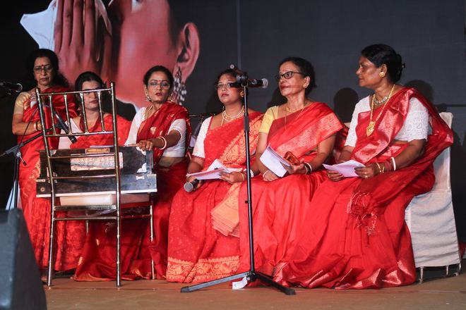
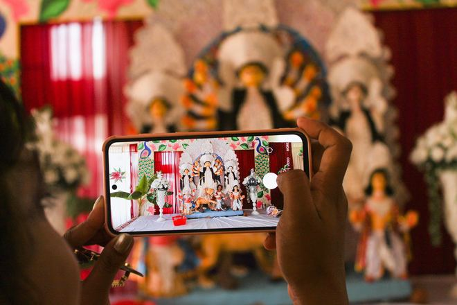
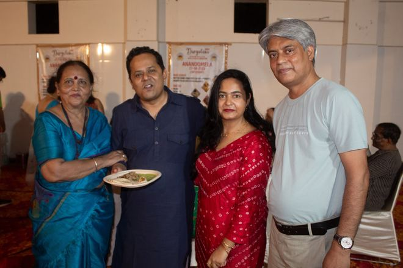
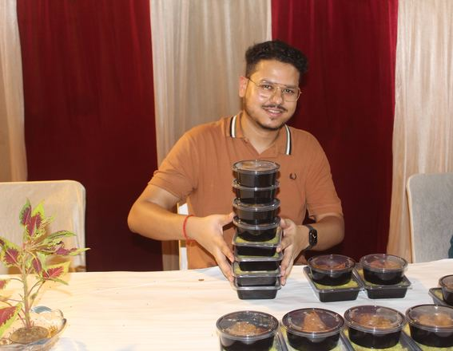
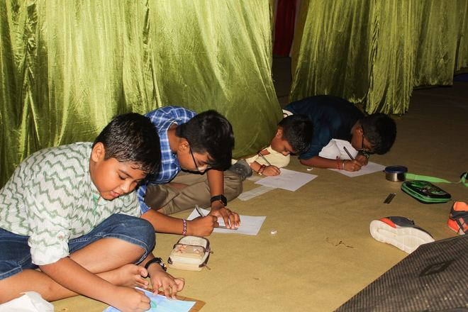
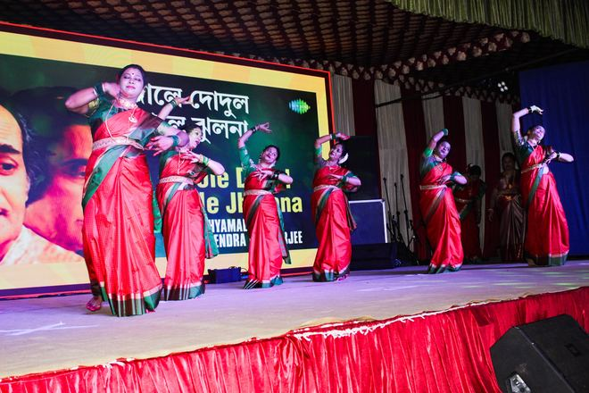
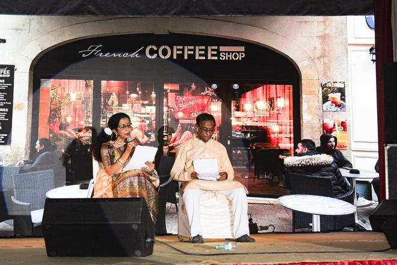
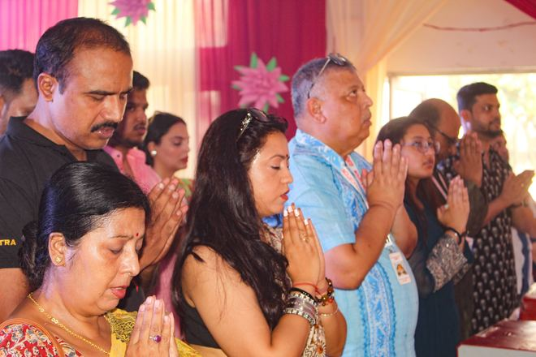
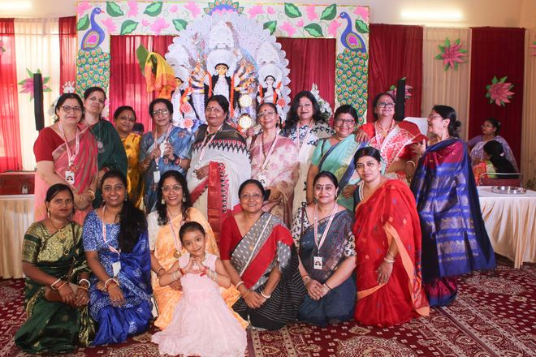
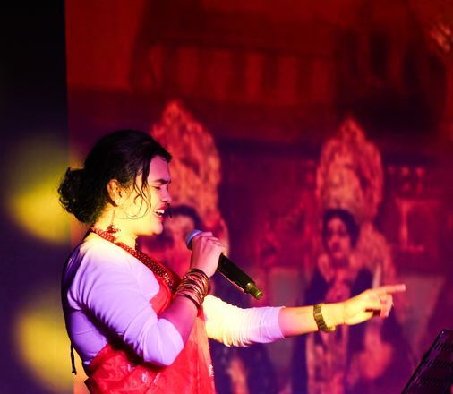
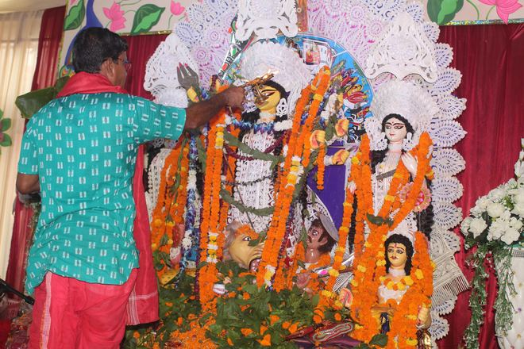
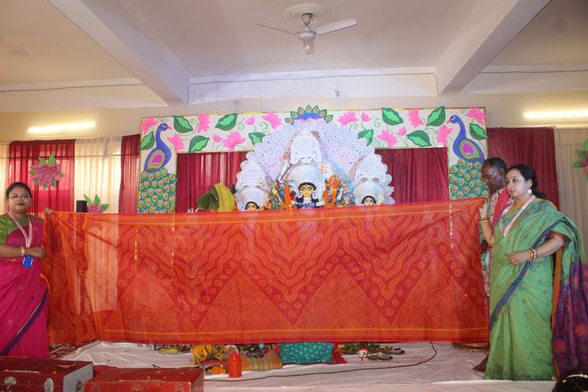
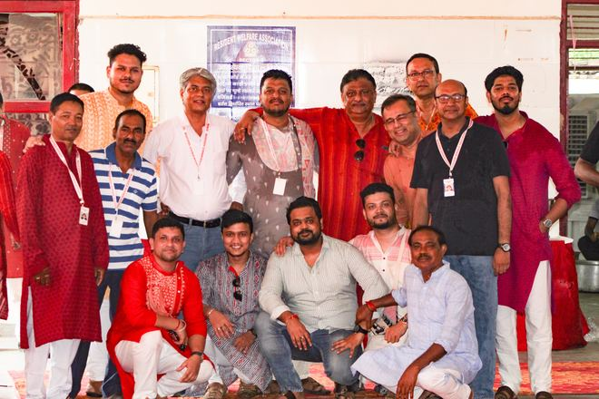
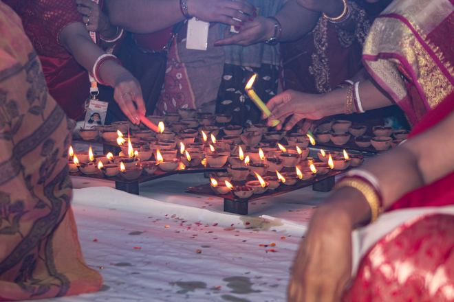
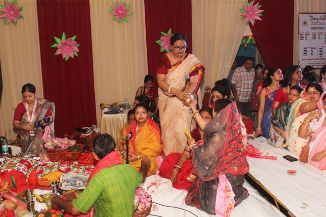
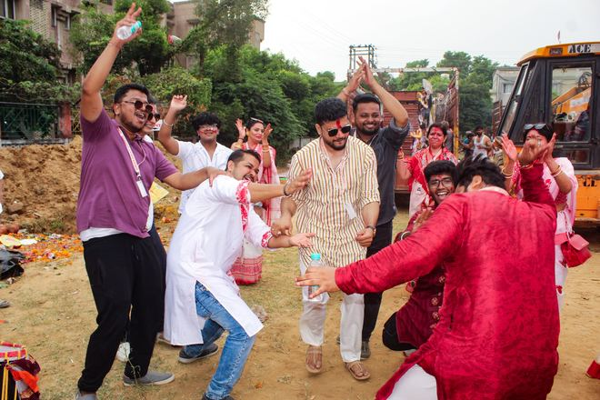
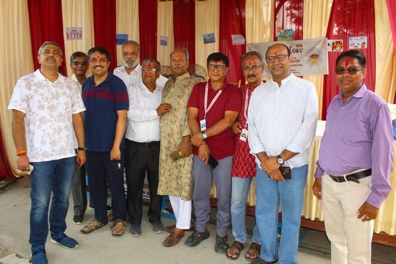
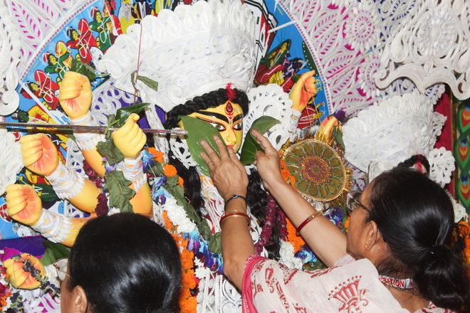
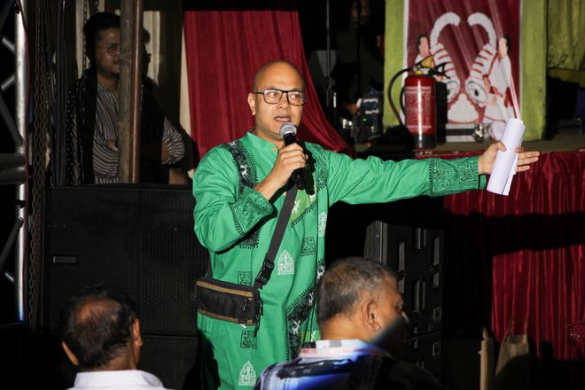
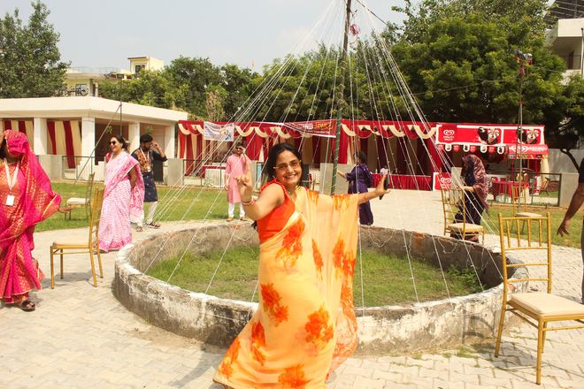
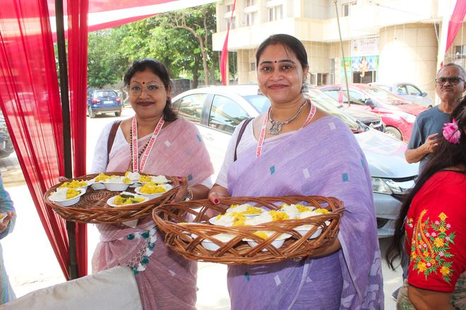
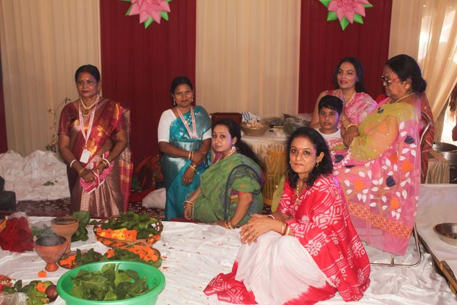
Gurgaon Bengalee Association organises Gurugram's oldest Durga Puja, a tradition that began in 1982 and has grown alongside the city itself. What started as a small gathering of Bengali families has become one of the most anticipated cultural celebrations in the region, bringing together devotion, music, theatre and community spirit over five days of festivities.
Calculating countdown…The beginning of festivities as the community comes together to welcome the season.
Welcome ceremony of Maa Durga with traditional rituals and cultural programmes.
Morning puja, bhog distribution and community participation.
Pushpanjali, celebrations and cultural performances.
The final day of puja, marked by rituals of gratitude and community bhog.
Sindoor Khela, farewell rituals and immersion ceremony.
Organising Gurugram's oldest Durga Puja is a community effort, made possible by generous sponsors and donors each year. If you'd like to contribute — whether through sponsorship or a donation — we'd love to hear from you.
Become a SponsorDetails to be confirmed closer to the festival — check back soon.
Details to be confirmed closer to the festival — check back soon.
Details to be confirmed closer to the festival — check back soon.
Whether you're a long-time member or new to Gurugram, everyone is welcome to be part of our Durga Puja celebrations.
Get in Touch See Full Schedule